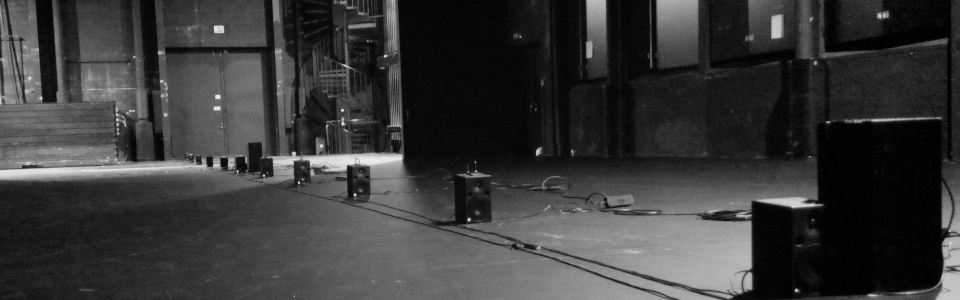
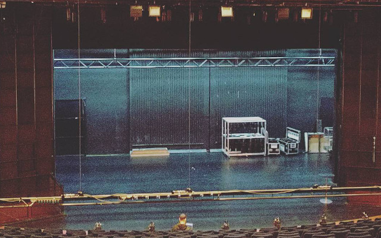
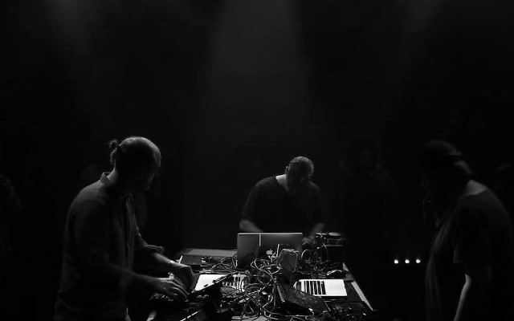
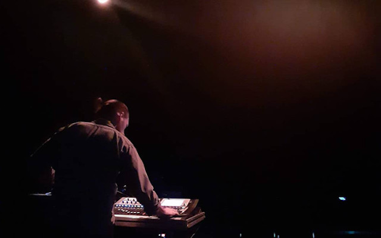
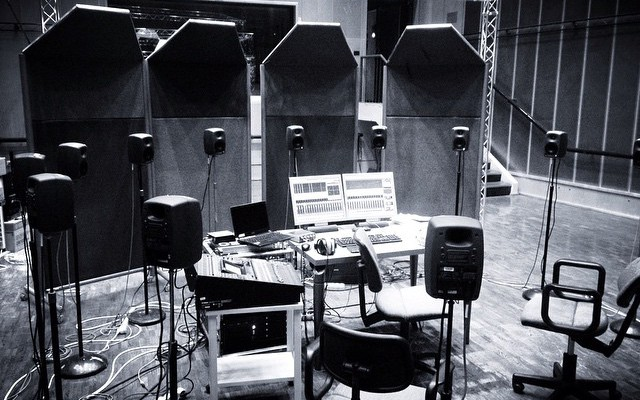
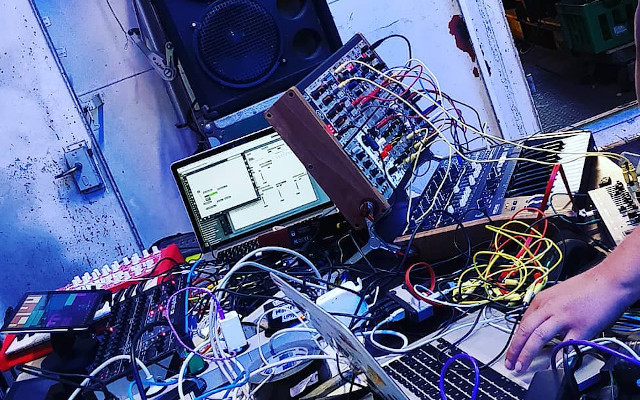
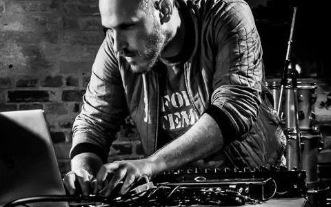
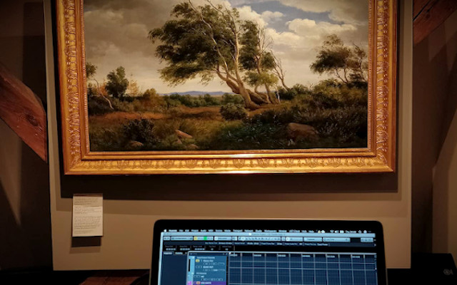
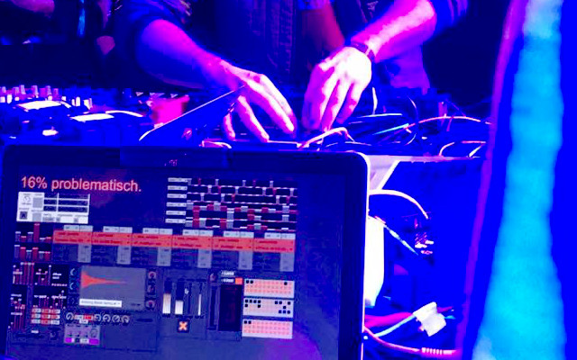
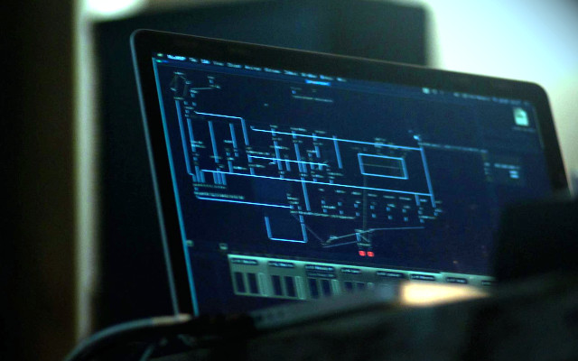
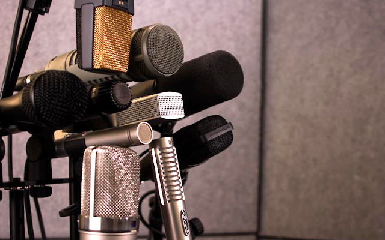
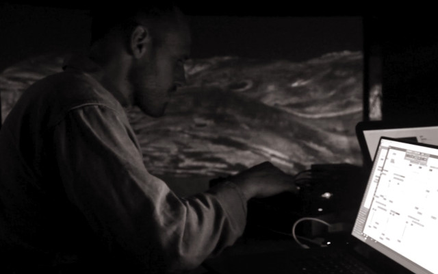
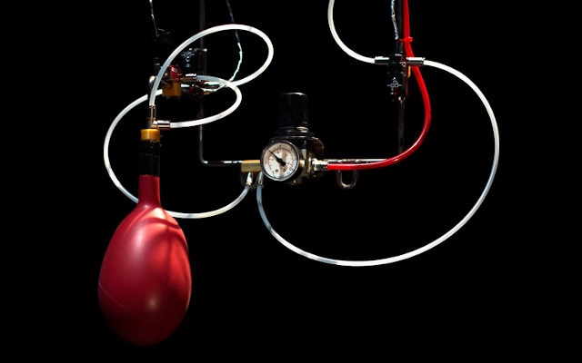
2021
> Skovgaard Museet, Audiowalk, binaural sound design, developed with Carte Blanche / The Art of Listening
2020
> Cantabile 2 ‘I Stilhedens Favn’, interactive children's theater play, composer / sound designer, binaural sound
> Pigeon Superstition, Fantom, Dynamo workspace, sound programmer